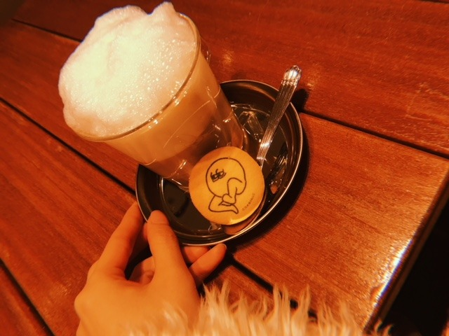
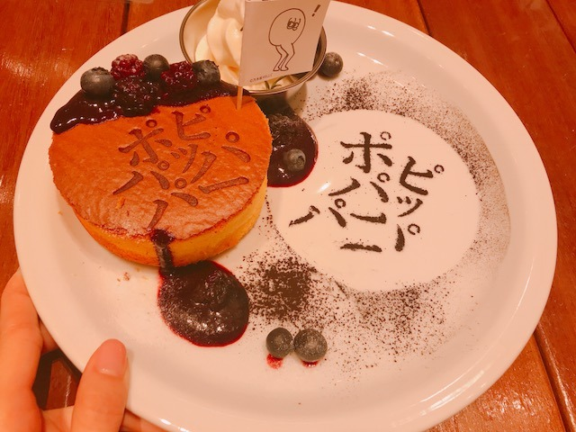
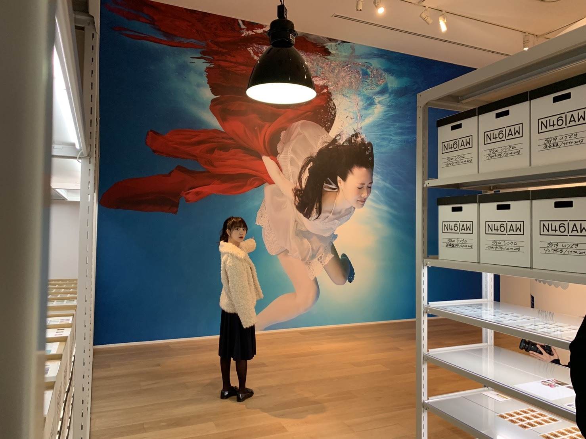
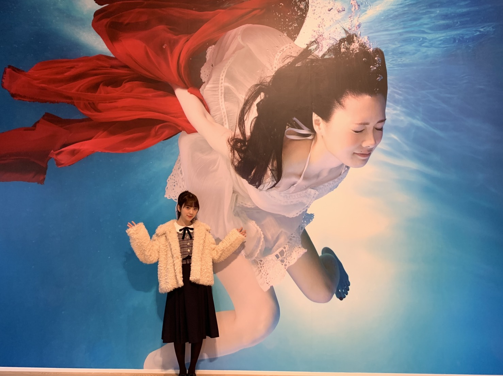
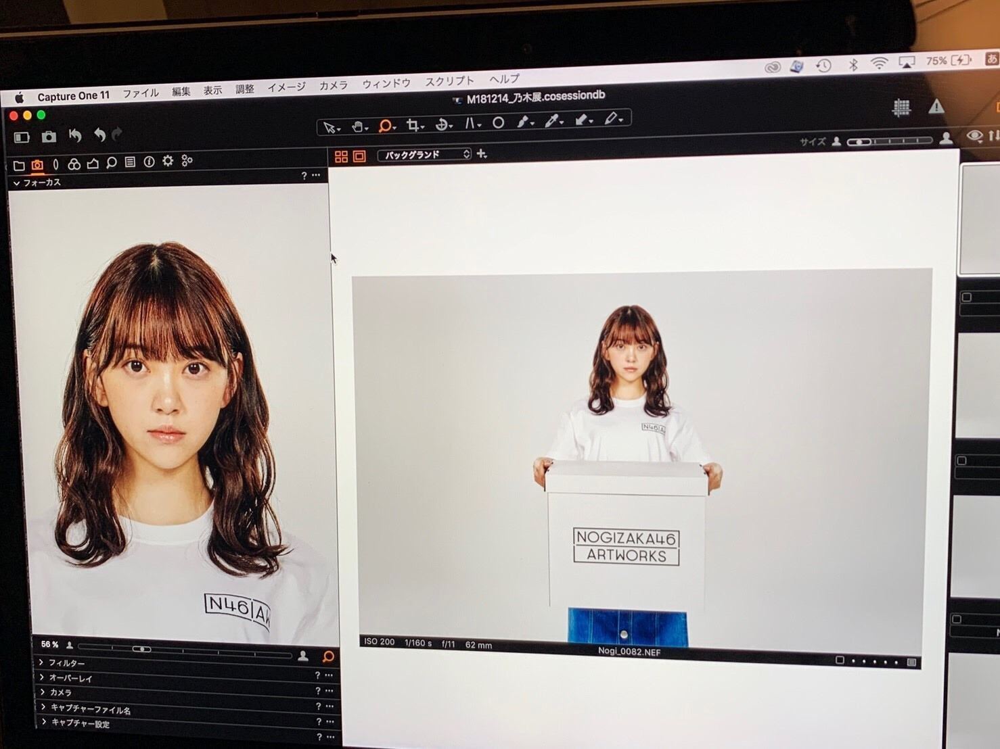

2019/0110Thu#だいたいぜんぶ展
乃木坂46 Artworks だいたいぜんぶ展
が明日からオープンになります！
一足先に飛鳥と与田ちゃんと見てきました

国内国外問わず美術館が好きで
観に行く私にとっては乃木坂ｘアート展が
夢見たいな空間でした
未公開のジャケ写やMVの絵コンテ、
衣装やムービー、、
シンプルだけど手が込んでいてお洒落で
見応えもあり乃木坂をより深く知って
味わっていただけると思います
フォトスポットもあり、インスタレーション！
たくさんSNSに #だいたいぜんぶ展 で
載せていただけたら嬉しいです✨
カフェの食べ物も美味しくて
映えでかわいいよ〜

このパンケーキもベリーソースが絶妙でした
個人的には別れ際もっと好きになるのカレーが
気になる！！今度食べに行こ〜
(ネタバレ注意)
こんな白石さんもいました！！

あ！！これ未公開のジャケ写だ！の顔

かわいい〜cute〜
グッズ売り場には
堀もいたるところにいます☺︎

いろんなグッズと撮影したときの。
楽しんでください〜！！
感想聞かせてね！
では
2019/01/10 13:54
コメント(343)
14日に見に行きマース！！
未央奈！明後日いくよ！
ブログ更新ありがとう✨✨
だいたいぜんぶ展行ってきたんだね〜!!
自分もめっちゃ行きたいなと思ってるんよ！！！食べ物も美味しそ〜
今度いってこよーっと！！その時はまた感想書くね！！！
未央奈いっぱい見つけてこよーっと！！ｗ
では
またブログ更新楽しみにしてるね！！✨✨
( ' ∇ ' )/ｶﾞﾝﾊﾞﾚｰ未央奈❤
だいたいぜんぶ展行ってきたんだね〜!!
自分もめっちゃ行きたいなと思ってるんよ！！！食べ物も美味しそ〜
今度いってこよーっと！！その時はまた感想書くね！！！
未央奈いっぱい見つけてこよーっと！！ｗ
では
またブログ更新楽しみにしてるね！！✨✨
( ' ∇ ' )/ｶﾞﾝﾊﾞﾚｰ未央奈❤
全然関係ないけど堀ちゃんて耳をすませばのしずくちゃんに似てる
絶っっっっっっ対に行きます！
早く予定つけて行きたい！！！
今までの衣装とかMVの小道具とか楽しみすぎる
まずはMV集観て予習しとかなきゃですね！
真顔って指示なんだろうけどすごい真顔笑
今までの衣装とかMVの小道具とか楽しみすぎる
まずはMV集観て予習しとかなきゃですね！
真顔って指示なんだろうけどすごい真顔笑
堀ちゃん。
だいたい全部展凄く楽しみだよ。
今月末にだいたい全部展に行くよ。
写真取れる所では色々写真撮りたい。
今から楽しみだよ。
堀ちゃん体に気をつけて頑張ってください。
だいたい全部展凄く楽しみだよ。
今月末にだいたい全部展に行くよ。
写真取れる所では色々写真撮りたい。
今から楽しみだよ。
堀ちゃん体に気をつけて頑張ってください。
未央奈、ブログ更新ありがとうございます！
だいだい全部展、なるべく早く行きたいけど、期間が長いのでゆっくりと計画して行きますね！
未央奈を探してみますね！
大阪での個握、綺麗な未央奈が見れて嬉しかったです！
未央奈も身体に気をつけて頑張ってくださいね！
応援しております！
だいだい全部展、なるべく早く行きたいけど、期間が長いのでゆっくりと計画して行きますね！
未央奈を探してみますね！
大阪での個握、綺麗な未央奈が見れて嬉しかったです！
未央奈も身体に気をつけて頑張ってくださいね！
応援しております！
早く行きたい！！明日はいけないから友達の都合が合う日に集まってなる早で行く〜
みおなかわゆい
最後のやつ心のモノローグ感すごい笑
みおなかわゆい
最後のやつ心のモノローグ感すごい笑
未央奈～こんばんは！
ぽてとです！
別れ際カレーめっちゃ気になるやん(笑)
楽しそうだし行きたいけど地方勢は
なかなか大変で・゜・(つД｀)・゜・
ぽてとです！
別れ際カレーめっちゃ気になるやん(笑)
楽しそうだし行きたいけど地方勢は
なかなか大変で・゜・(つД｀)・゜・
大学卒業できたら来月か3月に行く予定！（笑）
東京行ったことないから、良い場所探してたから良かった〜！宣伝ありがとう(^^)
未央奈ちゃん、最近危ないニュースが多いから次行く時はくれぐれも気を付けてね！
東京行ったことないから、良い場所探してたから良かった〜！宣伝ありがとう(^^)
未央奈ちゃん、最近危ないニュースが多いから次行く時はくれぐれも気を付けてね！
こんばんは。ブログ更新ありがとうございます。
だいたい全部展、見に行けるかな～。展覧会の所蔵品のパンフレット見たいなのを作ったら売れるかもしれません。美術関係が好きでも行けない人もたくさんいるだろうから、その方がより多くの人に楽しんでもらえると思います。
ではまた。
だいたい全部展、見に行けるかな～。展覧会の所蔵品のパンフレット見たいなのを作ったら売れるかもしれません。美術関係が好きでも行けない人もたくさんいるだろうから、その方がより多くの人に楽しんでもらえると思います。
ではまた。
箸君はいつやってくれるの？
みおなー！
大学合格したら親が連れて行ってくれるのでとりあえず第1志望受かるように勉強してきます！
だいたいぜんぶ展めっちゃ楽しみ〜！
大学合格したら親が連れて行ってくれるのでとりあえず第1志望受かるように勉強してきます！
だいたいぜんぶ展めっちゃ楽しみ〜！
未央奈ちゃん、ひろっしーです！コメント投稿554回目です！
前回はブログ「初夢は、、」にブログとモバメの感想を書きました！
時間→「No.657 2019年1月 6日 01:52」
2日連続ブログ更新ありがとうございます！
未央奈ちゃんもコーヒー飲めないの？僕も～！共通点があると凄く嬉しくなっちゃいます！
でも、僕はコーヒー牛乳も飲めないので未央奈ちゃんの方が先飲めるようになるかもですね！
未央奈ちゃんはもう一歩、僕はもう二歩(笑)
僕が今、自分が生まれた病院でヘルパーとして働けているのも凄い事だな～と時々思います！
・96年11月29日に超未熟児(670g)で生まれる
・約4年前にテレビで病院の特集
・出産時に関わっていた看護婦さんが映る
・それを偶然お母さんが観る
・看護部長になっていた事を知る
・十数年振りに病院に行く
・その当時、働いてない事を伝える
・看護部長に誘われる
で、今に至ります！今年の4月で丸4年です！
今年も精一杯お仕事頑張ります！
自分の事ばかり書いちゃってスミマセン！
上手に告知の流れに持っていきましたね！
でも三重県民なので観れないよ～！ショック！
充実したお正月を過ごされたんですね！
今年はプリン会のユニット曲作って欲しいな！日曜日の「らじらー！」聴きますね！楽しみ！お寿司、梅しそ巻き美味しかった～？
「だいたい全部展」時間があれば行こっかな！
今週も「レコメン！」お疲れ様でした！
トリミングと充電器の話凄く面白かったです！
ここまで読んで頂きありがとうございました！
毎日お仕事お疲れ様です！体調にはくれぐれも気を付けて頑張ってくださいね！
おやすみおな～！
前回はブログ「初夢は、、」にブログとモバメの感想を書きました！
時間→「No.657 2019年1月 6日 01:52」
2日連続ブログ更新ありがとうございます！
未央奈ちゃんもコーヒー飲めないの？僕も～！共通点があると凄く嬉しくなっちゃいます！
でも、僕はコーヒー牛乳も飲めないので未央奈ちゃんの方が先飲めるようになるかもですね！
未央奈ちゃんはもう一歩、僕はもう二歩(笑)
僕が今、自分が生まれた病院でヘルパーとして働けているのも凄い事だな～と時々思います！
・96年11月29日に超未熟児(670g)で生まれる
・約4年前にテレビで病院の特集
・出産時に関わっていた看護婦さんが映る
・それを偶然お母さんが観る
・看護部長になっていた事を知る
・十数年振りに病院に行く
・その当時、働いてない事を伝える
・看護部長に誘われる
で、今に至ります！今年の4月で丸4年です！
今年も精一杯お仕事頑張ります！
自分の事ばかり書いちゃってスミマセン！
上手に告知の流れに持っていきましたね！
でも三重県民なので観れないよ～！ショック！
充実したお正月を過ごされたんですね！
今年はプリン会のユニット曲作って欲しいな！日曜日の「らじらー！」聴きますね！楽しみ！お寿司、梅しそ巻き美味しかった～？
「だいたい全部展」時間があれば行こっかな！
今週も「レコメン！」お疲れ様でした！
トリミングと充電器の話凄く面白かったです！
ここまで読んで頂きありがとうございました！
毎日お仕事お疲れ様です！体調にはくれぐれも気を付けて頑張ってくださいね！
おやすみおな～！
どいやさん！
未央奈～ こんにちは
連日のブログ更新ありがとうございます。
「乃木坂４６Art works だいたいぜんぶ展」、なかなか楽しい企画になっていますね。かなり大きなまいやんとの出会い、「ポピパッパパー」のパンケーキも楽しそう、ぜひ東京へ行く機会があれば、ぜひ立ち寄りたいと思います。グッズも楽しそうですね。
日曜日の「らじらー」も楽しみにしております。
連日のブログ更新ありがとうございます。
「乃木坂４６Art works だいたいぜんぶ展」、なかなか楽しい企画になっていますね。かなり大きなまいやんとの出会い、「ポピパッパパー」のパンケーキも楽しそう、ぜひ東京へ行く機会があれば、ぜひ立ち寄りたいと思います。グッズも楽しそうですね。
日曜日の「らじらー」も楽しみにしております。
本当はもっと食べて来たんじゃないの〜？？僕もパンケーキ食べたいと思います！
堀さん、こんばんは。
日付が改まりまして今日は1月11日、めでたい1並びの日。いよいよ本日、待望の『乃木坂46 Artworks だいたいぜんぶ展』が始まります。
おしゃれで美しいものがたくさんある乃木坂46。衣装しかり、ジャケット写真しかり、さまざまなアイテムしかり。これまでの乃木坂46の歴史をふり返りつつ、美しいアートワークスにたくさん出会えるとは何という幸せ。
観るだけでなく、美味しいものを食することもできるので、食いしんぼ……こほん、美食家の堀さんにも楽しみだったようですね（にこにこ）。
展示を通して乃木坂46をよく知る人はもちろん、知らない人にもその魅力が伝わるといいなと思っています。ぜひ行ってみたいものです。
ではまたコメント寄せます。おやすみなさい。
さらばだ、また会おう！（気球に乗って去りぬ〜）
日付が改まりまして今日は1月11日、めでたい1並びの日。いよいよ本日、待望の『乃木坂46 Artworks だいたいぜんぶ展』が始まります。
おしゃれで美しいものがたくさんある乃木坂46。衣装しかり、ジャケット写真しかり、さまざまなアイテムしかり。これまでの乃木坂46の歴史をふり返りつつ、美しいアートワークスにたくさん出会えるとは何という幸せ。
観るだけでなく、美味しいものを食することもできるので、食いしんぼ……こほん、美食家の堀さんにも楽しみだったようですね（にこにこ）。
展示を通して乃木坂46をよく知る人はもちろん、知らない人にもその魅力が伝わるといいなと思っています。ぜひ行ってみたいものです。
ではまたコメント寄せます。おやすみなさい。
さらばだ、また会おう！（気球に乗って去りぬ〜）
未央奈ちゃん、こんばんは(^o^)/
『別れ際もっと好きになる』のカレーってMVで未央奈がオムさんに作ってたたカレーかな？
『別れ際もっと好きになる』のカレーってMVで未央奈がオムさんに作ってたたカレーかな？
更新ありがと！
だいたい全部店行こうか迷ってたけど未央奈のブログみて行きたくなった！
横浜の個握楽しみにしてるよ〜
だいたい全部店行こうか迷ってたけど未央奈のブログみて行きたくなった！
横浜の個握楽しみにしてるよ〜
堀ちゃんブログ更新ありがとう^ ^
だいたいぜんぶ展行きたいなぁ...
乃木坂の衣装は清楚でデティールが可愛くて着てみたいなぁっていつも思うから、衣装展示は見てみたい。
カフェもフォトジェニックだしメニューがめっちゃかわいいから、いられるだけで楽しいだろうな〜
グッズもほしい！
でも、大阪在住なんで行けないんで、SNSとか見て雰囲気楽しんでおきます。笑
堀ちゃんとまいやん！私が好きなメンバーツートップやから嬉しい、かわいい、感動✨
水の中にいてもこんなに美人って凄いよね 笑
では、寒さに気をつけて〜
だいたいぜんぶ展行きたいなぁ...
乃木坂の衣装は清楚でデティールが可愛くて着てみたいなぁっていつも思うから、衣装展示は見てみたい。
カフェもフォトジェニックだしメニューがめっちゃかわいいから、いられるだけで楽しいだろうな〜
グッズもほしい！
でも、大阪在住なんで行けないんで、SNSとか見て雰囲気楽しんでおきます。笑
堀ちゃんとまいやん！私が好きなメンバーツートップやから嬉しい、かわいい、感動✨
水の中にいてもこんなに美人って凄いよね 笑
では、寒さに気をつけて〜
面白そう行きたい！
「別れ際」カレーって企画した人ナイスですねー。
今でもあのMV大好き（特に予告編！）なんだけど
良い味出してたじょーさん、ちーちゃん、ひめたんは
もう卒業生なんだもんね、寂しいなぁ・・・。
今でもあのMV大好き（特に予告編！）なんだけど
良い味出してたじょーさん、ちーちゃん、ひめたんは
もう卒業生なんだもんね、寂しいなぁ・・・。
パ行で歌いながら見に行きたいっす
未央奈～☆☆
だいたいぜんぶ展、めちゃくちゃ面白そう！
カフェの食べ物も美味しそ～
写真を見てたら食べたくなっちゃったよ。笑
あ、これって、未央奈の写真が上手すぎるってことだね！
さすがだ～
だいたいぜんぶ展、絶対に観に行くよー
だいたいぜんぶ展、めちゃくちゃ面白そう！
カフェの食べ物も美味しそ～
写真を見てたら食べたくなっちゃったよ。笑
あ、これって、未央奈の写真が上手すぎるってことだね！
さすがだ～
だいたいぜんぶ展、絶対に観に行くよー
未央奈！こんばんは！
いつもブログ更新ありがとう。ぺこっ
おー！だいたいぜんぶ展超楽しみ〜！
一足先に！うらやましい！！
えっとその飲み物の名前は、、
おいでシャンプーオレ
なんだかおもろい名前。笑
あわあわ。と、モコモコ。
どいやさんクッキーもおいしそう。笑
さすが。いいなぁ、夢見たいな空間。
そうなのか！こっちも乃木坂についてまだまだ勉強中だからすごく観に行きたい！！
やったー！インスタ映えだね！✨
フォトジェニックぅ〜〜
うん、わかった。SNSに載せるね。
ポピパッパパー パンケーキ
噛まずに三回言えなそう。笑
絶妙なベリーソース。いいね。
オムさんカレー楽しみ。(^-^)
こっちも食べに行こ〜
未央奈の顔。笑
まいやん、でかっ。等身大？
未公開だけど良いジャケ写だね！の顔(^｡^)
グッズ売り場でいろんな堀さん見つけよっと♪
笑った。真顔っておもろい。笑
良い表情。笑 二回みてもおもろい。笑
この未央奈見つけたい！☺︎
まだ未定だけど今度いくよ〜！！
感想言います。
では！おやすみおな〜〜✨
いつもブログ更新ありがとう。ぺこっ
おー！だいたいぜんぶ展超楽しみ〜！
一足先に！うらやましい！！
えっとその飲み物の名前は、、
おいでシャンプーオレ
なんだかおもろい名前。笑
あわあわ。と、モコモコ。
どいやさんクッキーもおいしそう。笑
さすが。いいなぁ、夢見たいな空間。
そうなのか！こっちも乃木坂についてまだまだ勉強中だからすごく観に行きたい！！
やったー！インスタ映えだね！✨
フォトジェニックぅ〜〜
うん、わかった。SNSに載せるね。
ポピパッパパー パンケーキ
噛まずに三回言えなそう。笑
絶妙なベリーソース。いいね。
オムさんカレー楽しみ。(^-^)
こっちも食べに行こ〜
未央奈の顔。笑
まいやん、でかっ。等身大？
未公開だけど良いジャケ写だね！の顔(^｡^)
グッズ売り場でいろんな堀さん見つけよっと♪
笑った。真顔っておもろい。笑
良い表情。笑 二回みてもおもろい。笑
この未央奈見つけたい！☺︎
まだ未定だけど今度いくよ〜！！
感想言います。
では！おやすみおな〜〜✨
だいたい堀殿ぜんぶ展!行きたいうぇーい⊂(ο･㉨･ο）⊃”くまﾃﾞｽ…
昆布のおにぎり♡たまごサンドサラダをあむあむあむ[壁]ｴ＿)でばいころまるロンo(^-^o)(o^-^)oロンo(^-^o)(o^-^)oロン
昆布のおにぎり♡たまごサンドサラダをあむあむあむ[壁]ｴ＿)でばいころまるロンo(^-^o)(o^-^)oロンo(^-^o)(o^-^)oロン
ブログ更新ありがと～
乃木坂展めっちゃたのしみ～
乃木坂展めっちゃたのしみ～
のりみおなー最高！
夜分にすみません。
だいたいぜんぶ展，
友達と，行けたら行きたいです。
春休みやＧＷの期間やっていますもんね。
でもチケット早めに買っといたほうがいいかな。
お疲れ様です。
だいたいぜんぶ展，
友達と，行けたら行きたいです。
春休みやＧＷの期間やっていますもんね。
でもチケット早めに買っといたほうがいいかな。
お疲れ様です。
１月20の握手会で未央奈に
会えるの楽しみすぎてハゲそう、、！！
むらさきの髪色で一部参戦するから待っててね！
ほーりーブログ更新ありがとうね
感想聞かせる～よ
ほーりー体に気をつけて頑張ってね
バイビー
感想聞かせる～よ
ほーりー体に気をつけて頑張ってね
バイビー
更新ありがとうございます！
行きたいけど愛知県勢なので行けないです...
でもなぁちゃんの卒ラは絶対行きます！
◢⁴⁶◢⁴⁶◢⁴⁶◢⁴⁶◢⁴⁶◢⁴⁶
行きたいけど愛知県勢なので行けないです...
でもなぁちゃんの卒ラは絶対行きます！
◢⁴⁶◢⁴⁶◢⁴⁶◢⁴⁶◢⁴⁶◢⁴⁶
展示会、絶対に行きます。
でも予約とれるかな(笑)f(^_^;
でも予約とれるかな(笑)f(^_^;
堀ちゃん
おはようございます
だいたいぜんぶ展の詳細を見ましたがすごい盛りだくさんでテンションが上がりますね
グッズの種類もめっちゃあったから驚きでした
自転車まであってすごいですね（もし全種類買ったら恐ろしい額になるね笑）
カフェは別れ際もっと好きになるのカレーか唐揚げ姉妹プレートが気になりました
まいやんのガールズルールのジャケ写は必見ですね
本人も行ってサインを描く様子がブログにありましたよ
来週に仕事で東京に出張なので、順調に行けば夜の時間帯で見に行けるかもしれないので、行けたらと思います
もし間に合わなかったたら、専用の日を作って必ず見に行きます
果たして1回だけで全部見切れるのか心配ですが最低1回は行くね（話を聞く限り数回行かないと見切れない気がする笑）
今日も頑張ろうね！
ありがとうございました
おはようございます
だいたいぜんぶ展の詳細を見ましたがすごい盛りだくさんでテンションが上がりますね
グッズの種類もめっちゃあったから驚きでした
自転車まであってすごいですね（もし全種類買ったら恐ろしい額になるね笑）
カフェは別れ際もっと好きになるのカレーか唐揚げ姉妹プレートが気になりました
まいやんのガールズルールのジャケ写は必見ですね
本人も行ってサインを描く様子がブログにありましたよ
来週に仕事で東京に出張なので、順調に行けば夜の時間帯で見に行けるかもしれないので、行けたらと思います
もし間に合わなかったたら、専用の日を作って必ず見に行きます
果たして1回だけで全部見切れるのか心配ですが最低1回は行くね（話を聞く限り数回行かないと見切れない気がする笑）
今日も頑張ろうね！
ありがとうございました
ブログの更新ありがとう！
だいたいぜんぶ展、初日の今日にチケット取れたから行くよー
とても待ち遠しくて、今日は高速で仕事捌けそう。
応援してるよー
中と外とで温度が全然違うだろうから、体温調節に気を付けてね！
だいたいぜんぶ展、初日の今日にチケット取れたから行くよー
とても待ち遠しくて、今日は高速で仕事捌けそう。
応援してるよー
中と外とで温度が全然違うだろうから、体温調節に気を付けてね！
堀ちゃん。
今月末にだいたい全部展行くよ。
今から凄く楽しみだよ。
色々グッズも売っているだね。
体に気をつけて頑張ってください。
今月末にだいたい全部展行くよ。
今から凄く楽しみだよ。
色々グッズも売っているだね。
体に気をつけて頑張ってください。
堀ちゃん、ブログ更新ありがとう〜
だいたい全部展、土曜日行きます！
堀ちゃん関連の展示品を見たいし、
堀ちゃん関連のグッズを欲しい！
堀ちゃんは食べなかったみたいだけど、
堀ちゃん関連ではカレーは外せない！
絶対食べるよー
見た感想、握手会で報告するねー
堀ちゃん、大好きだよー
だいたい全部展、土曜日行きます！
堀ちゃん関連の展示品を見たいし、
堀ちゃん関連のグッズを欲しい！
堀ちゃんは食べなかったみたいだけど、
堀ちゃん関連ではカレーは外せない！
絶対食べるよー
見た感想、握手会で報告するねー
堀ちゃん、大好きだよー
未央奈可愛いよー！好きだよー！
これからも頑張れ！だいだい全部展行くよー！
これからも頑張れ！だいだい全部展行くよー！
未央奈ちゃん更新ありがとー！
だいたいぜんぶ展
見に行きたい！！
カフェのメニューもおしゃれで良き！
グッズもたくさんありそう！
イベントがあるたびに地方に住んでることを後悔してる。笑
あー、行きたい！！！
だいたいぜんぶ展
見に行きたい！！
カフェのメニューもおしゃれで良き！
グッズもたくさんありそう！
イベントがあるたびに地方に住んでることを後悔してる。笑
あー、行きたい！！！
だいたいぜんぶ展、名古屋でもしてくれたら、家族で見に行きたいなー
未央奈、おはよう
だいたいぜんぶ展はチケットをゲット済みなので、今度の休みに行くよ。
だいたいぜんぶ展をやるって初めて知ったときは「やった～ 」って心のなかで叫んじゃうくらい嬉しかったんだよね｡
」って心のなかで叫んじゃうくらい嬉しかったんだよね｡
だからスッゴク行くのが楽しみだよ。
物販コーナーでは、未央奈にたくさん会えるんだね。
館内のどこに未央奈がいるのかを見つけるのも楽しいだろうし、物販やカフェもいろいろなグッズ・メニューがあって面白そうだよね。
メニューで特に気になってるのが「オムさんカレー」これは絶対に食べたいと思ってるんだよ。
行ったらブログや755のコメント等に感想を書くね。
そうそう、月曜日に横浜で行われる握手会に参加するのヨロシクね
ゴロ～
だいたいぜんぶ展はチケットをゲット済みなので、今度の休みに行くよ。
だいたいぜんぶ展をやるって初めて知ったときは「やった～
だからスッゴク行くのが楽しみだよ。
物販コーナーでは、未央奈にたくさん会えるんだね。
館内のどこに未央奈がいるのかを見つけるのも楽しいだろうし、物販やカフェもいろいろなグッズ・メニューがあって面白そうだよね。
メニューで特に気になってるのが「オムさんカレー」これは絶対に食べたいと思ってるんだよ。
行ったらブログや755のコメント等に感想を書くね。
そうそう、月曜日に横浜で行われる握手会に参加するのヨロシクね
ゴロ～
未央奈、
ちょっとだけ大人っぽくなったよな。
乃木坂入りたての頃の黒髪ロングの可愛い未央奈が忘れられない、、、笑笑
ちょっとだけ大人っぽくなったよな。
乃木坂入りたての頃の黒髪ロングの可愛い未央奈が忘れられない、、、笑笑
未央奈、今日も一日お疲れさまでした。
だいたいぜんぶ展は、明日行ってきます！
僕は「命は美しい」から応援を始めたので、その時のことを思い出しながら、それより前のシングルの未央奈の活躍を振り返りつつ、いろいろ見て楽しめたらいいなって思います。
感想はまた今度の握手会でお話ししようかな。
14日の握手会にも行くのでよろしくですm(_ _)m
短いけど、今日はこれで。
未央奈が頑張っている姿を見て、僕も頑張らなきゃなって思う日々です。自分のやるべきことをしていけるよう、頑張っていきます…。そのためにも体調管理には気をつけて過ごしていこうね。。。
ではでは、ねこでした。
全国各地でしてほしい…
香川県県民にはきつい…
香川県県民にはきつい…
未央奈ちゃん、こんにちは。
連続のブログ更新やモバメありがとう。
だいたいぜんぶ展、面白そうだから行かせてもらいます。
東京にいるけど、今日のNHK岐阜で放送される未央奈ちゃんを見たいんだけど、どうすればいいの？教えてください。
日曜はらじらーだからハスキーにならないように良い体調で過ごしてくださいね。
乃木坂46と頑張ってるcuteでsmartな未央奈ちゃんを応援しています。
連続のブログ更新やモバメありがとう。
だいたいぜんぶ展、面白そうだから行かせてもらいます。
東京にいるけど、今日のNHK岐阜で放送される未央奈ちゃんを見たいんだけど、どうすればいいの？教えてください。
日曜はらじらーだからハスキーにならないように良い体調で過ごしてくださいね。
乃木坂46と頑張ってるcuteでsmartな未央奈ちゃんを応援しています。
またまたブログ更新ありがとう！
白いモコモコのアウター着てる未央奈かわいい♡
だいたいぜんぶ展ますます行きたくなりました…！
ポピパッパパーパンケーキとオムさんカレー食べたいです！
もともと美術館にある作品の説明とかじっくり読むタイプだし、乃木坂の衣装やジャケ写好きだから、行ったらすごく長居してしまいそうです（笑）
白いモコモコのアウター着てる未央奈かわいい♡
だいたいぜんぶ展ますます行きたくなりました…！
ポピパッパパーパンケーキとオムさんカレー食べたいです！
もともと美術館にある作品の説明とかじっくり読むタイプだし、乃木坂の衣装やジャケ写好きだから、行ったらすごく長居してしまいそうです（笑）
へへへい未央奈(･∀･∩)
将来的には未央奈＝アート展もプロデュース出来るようになって欲しいすねー歴史に名を残せますよ。笑
四期生には興味なかったんすけど..精霊ちゃんには心くすぐられた。笑
未央ちゃん虐めたら駄目だよ( -_-)
がんばみおなー
将来的には未央奈＝アート展もプロデュース出来るようになって欲しいすねー歴史に名を残せますよ。笑
四期生には興味なかったんすけど..精霊ちゃんには心くすぐられた。笑
未央ちゃん虐めたら駄目だよ( -_-)
がんばみおなー


未央奈のブログ見てたら、だいたい全部展めっちゃ行きたくなったよ！
次ぎの更新も楽しみに待ってま～す(^Д^)